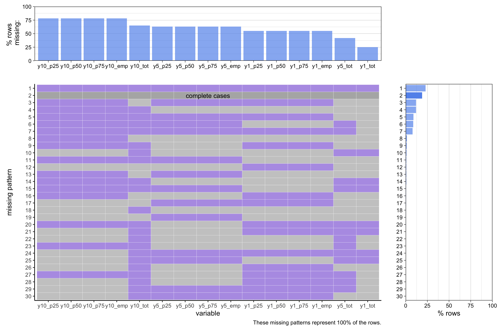

Code
suppressPackageStartupMessages(library(tidyverse))
pseoe <- read_csv("data/pseoe_all.csv", show_col_types = FALSE)
#pseof <- read_csv("data/pseof_all.csv", show_col_types = FALSE)
#head(pseoe)
#head(pseof)For this project, we are using Post-Secondary Employment Outcomes (PSEO) datasets that contain earnings and employment outcomes for graduates.
The national and state-level PSEO datasets are publicly available through the United States Center for Economic Studies. Specifically, we are using the PSEOE files (contains salary and employment statistics) from the PSEO section.
The data is collected through the Longitudinal Employer-Household Dynamics (LEHD) program. This program partners with various post-secondary institutions, state agencies, and the United States Census Bureau. LEHD merges admistrative job data with the post-secondary education records from its partners to create the PSEO datasets.
We are working with CSV files downloaded directly from the public data access page. The national-level datasets contains approximately 564,000 records and 36 columns, covering aggregated earnings and employment outcomes for graduates 1 year, 5 years, and 10 years post-graduation (when available).
Note that there are three types of columns in the PSEO datasets:
The main identifiers in the dataset that we will use in our analysis includes:
The data covers the years from 2001 to 2020 as of the 2023Q20 release. New data for additional partner institutions is added irregularly, such as the June 2024 update that incorporated new universities. See the PSEO data notices for their updates.
Limitations: There are regional coverage gaps in the dataset because it only includes outcomes from institutions that have partnered with the Census Bureau through data-sharing agreements. For that reason, many states have no coverage while most others only have partial coverage. Breakdown of state-by-state coverage can be found on this webpage.
For more details on the above, see the follow resources:
suppressPackageStartupMessages(library(tidyverse))
pseoe <- read_csv("data/pseoe_all.csv", show_col_types = FALSE)
#pseof <- read_csv("data/pseof_all.csv", show_col_types = FALSE)
#head(pseoe)
#head(pseof)When looking at the missing values in the dataset, we see that they only appear in the data columns (as described in section 2.1.3). The id and status columns contain no missing values.
idcols <- c(
"agg_level_pseo", "inst_level", "institution", "degree_level",
"cip_level", "cipcode", "grad_cohort", "grad_cohort_years",
"geo_level", "geography", "ind_level", "industry"
)
variablecols <- c(
"y1_p25_earnings", "y1_p50_earnings", "y1_p75_earnings", "y1_grads_earn",
"y5_p25_earnings", "y5_p50_earnings", "y5_p75_earnings", "y5_grads_earn",
"y10_p25_earnings", "y10_p50_earnings", "y10_p75_earnings", "y10_grads_earn",
"y1_ipeds_count", "y5_ipeds_count", "y10_ipeds_count"
)
statuscols <- c(
"status_y1_earnings", "status_y1_earnings", "status_y1_earnings", "status_y1_grads_earn",
"status_y5_earnings", "status_y5_earnings", "status_y5_earnings", "status_y5_grads_earn",
"status_y10_earnings", "status_y10_earnings", "status_y10_earnings", "status_y10_grads_earn",
"status_y1_ipeds_count", "status_y5_ipeds_count", "status_y10_ipeds_count"
)
# assertion
stopifnot(colnames(pseoe[, colSums(is.na(pseoe)) != 0]) == variablecols)The following plot then shows the missing value patterns observed in these data-columns.
library(redav)
pseoe_missing <- pseoe[, colSums(is.na(pseoe)) != 0, drop=FALSE]
colnames(pseoe_missing) <- colnames(pseoe_missing) %>%
gsub("grads_earn", "emp", .) %>%
gsub("ipeds_count", "tot", .) %>%
gsub("_earnings$", "", .)
suppressMessages(suppressWarnings(plot_missing(pseoe_missing)))
The first thing that can be observed from this plot is that the year 10 earnings columns (y10_p25, y10_p50, y10_p75) contain the most missing values and are missing about 75% of the time. The year 5 earnings columns are missing about 60 percent of the time, and the year 1 earnings columns about 50%. When looking at the missing patterns, we also see that the earnings columns for a given year are always missing together, i.e. if one percentile is missing the others are also missing. Furthermore, the columns ending with “_emp”, indicating the amount of employed graduates for the given year, is also always missing together with the corresponding earnings columns. Lastly, the columns ending in “_tot”, indicating the total amount of graduates for which the earnings percentiles are calculated for the given group and year, are always missing less often than the corresponding earnings columns.
The next thing that we can take into account is that the dataset gives us information about the data present in the data columns through the status columns. Concretely, the status columns contain one of the values shown in the following table (from the LEHD data schema):
| Status code | Description |
|---|---|
| -2 | No data available in this category for this quarter |
| -1 | Data not available to compute this estimate |
| 1 | OK |
| 2 | IPEDS counts edited for consistency with PSEO categories |
| 3 | IPEDS counts not available |
| 4 | IPEDS counts partially missing |
| 5 | Value suppressed because it does not meet US Census Bureau publication standards. |
| 6 | Value calculated from other released measures - no significant distortion |
| 7 | Value calculated from other released measures - some of which have significantly distorted data |
| 9 | Data significantly distorted - fuzzed value released |
| 10 | Aggregate of cells - no significant distortion |
| 11 | Aggregate of cells not released because component cells do not meet U.S. Census Bureau publication standards |
| 12 | Aggregate of cells - some of which have significantly distorted data |
Looking at this table, we see that there are 5 status codes that should correspond to missing values: -1, -2, 3, 5, 11. When analyzing the dataset, we see that there is indeed a one-to-one correspondance between a missing value in a data column and the presence of one of these codes in the corresponding status column. This means that a value is missing if and only if this is indicated in the status column, where this column gives us more information about the reason that the value is missing.
library(dplyr)
library(purrr)
violations <- pseoe |>
rowwise() |>
mutate(
failed_check = any(
map2_lgl(
variablecols,
statuscols,
~ is.na(get(.x)) & (get(.y) %in% c(1, 2, 4, 6, 7, 9, 10, 12))
)
)
) |>
filter(failed_check) |>
ungroup()
# assertion
stopifnot(nrow(violations) == 0)library(dplyr)
library(purrr)
violations <- pseoe |>
rowwise() |>
mutate(
failed_check = any(
map2_lgl(
variablecols,
statuscols,
~ !is.na(get(.x)) & (get(.y) %in% c(-1, -2, 3, 5, 11))
)
)
) |>
filter(failed_check) |>
ungroup()
# assertion
stopifnot(nrow(violations) == 0)To get a sense of the reason for missing values, we can thus look at the distribution of status codes in each of the status columns, where we only consider status codes corresponding to missing values. This is shown in the following plot.
library(dplyr)
library(tidyr)
library(ggplot2)
library(stringr)
status_descriptions <- c(
`-2` = "No data available for this quarter",
`-1` = "Data not available",
`1` = "OK",
`2` = "IPEDS counts edited for consistency with PSEO categories",
`3` = "Counts not available",
`4` = "IPEDS counts partially missing",
`5` = "Census standards",
`6` = "Value calculated - no distortion",
`7` = "Value calculated - some distortion",
`9` = "Data significantly distorted - fuzzed value released",
`10` = "Aggregate - no distortion",
`11` = "Aggregate not released (standards unmet)",
`12` = "Aggregate - some distortion"
)
facet_order <- c(
"status_y1_earnings", "status_y1_employed_count", "status_y1_total_count",
"status_y5_earnings", "status_y5_employed_count", "status_y5_total_count",
"status_y10_earnings", "status_y10_employed_count", "status_y10_total_count"
)
plot_data <- pseoe |>
pivot_longer(
cols = all_of(statuscols),
names_to = "status_variable",
values_to = "status_value"
) |>
filter(!(status_value %in% c(1, 2, 4, 6, 7, 9, 10, 12))) # Exclude rows that have valid value
plot_data <- plot_data |>
mutate(status_variable = str_replace_all(status_variable, c(
"grads_earn" = "employed_count",
"ipeds_count" = "total_count"
)),
status_description = status_descriptions[as.character(status_value)],
status_variable = factor(status_variable, levels=facet_order))
plot_data <- plot_data |>
group_by(status_variable, status_description) |>
summarise(count = n(), .groups = "drop") |>
group_by(status_variable) |>
mutate(percentage = count / sum(count))
ggplot(plot_data, aes(x = status_description, y = percentage)) +
geom_bar(stat = "identity", fill = "steelblue", color = "white") +
facet_wrap(~status_variable) +
theme_minimal() +
labs(
title = "Reason for missing value",
x = "Reason",
y = "Percentage"
) +
scale_y_continuous(labels = scales::percent_format()) +
theme(axis.text.x = element_text(angle = 45, hjust = 1))When looking at the earnings data and the number of employed graduates, we see that this data for graduates one year after graduation is only missing because they don’t meet the Census Bureau standards.
However, when looking at graduates five years after graduation, this data is also often missing because it is simply not yet available. This trend continues for graduates ten years after graduation, where the most common reason for missing data is the fact that it is simply not available.
This of course makes sense, as many of the rows in the dataset correspond to cohorts that graduated less than 5 or 10 years ago. However, all cohorts graduated at least one year ago, and thus the reason for missing values one year after graduation cannot be that it is not yet available. Lastly, we see that the “total count” columns, representing the total number of graduates in the cohort, are only missing due to unavailability.